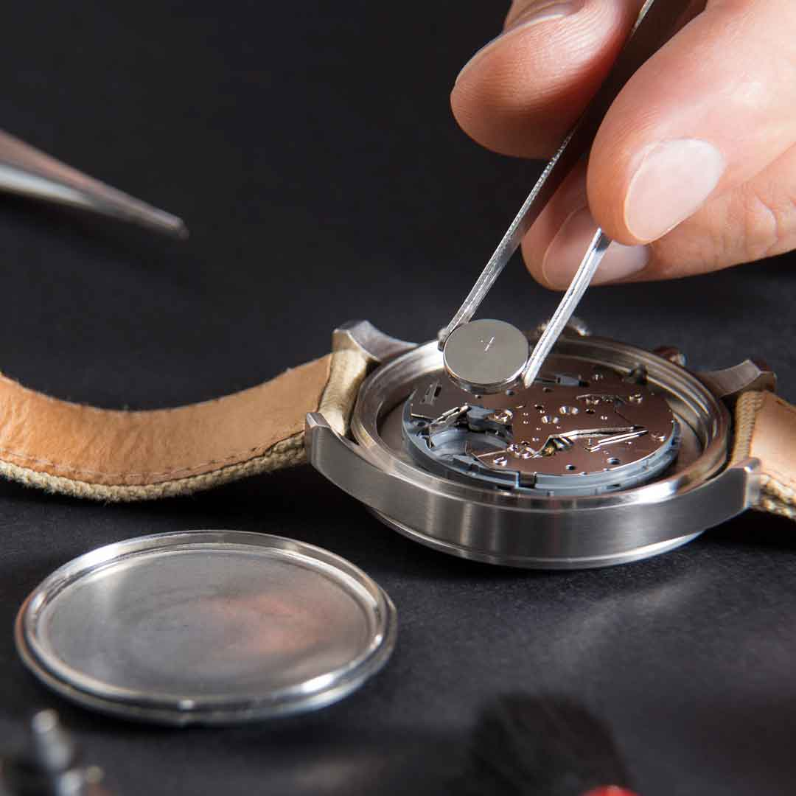
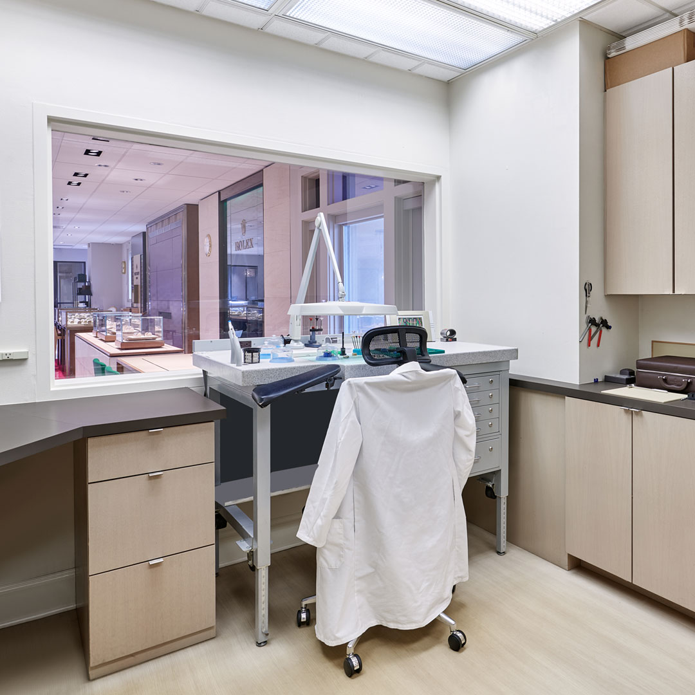

Laboratorio specializzato nell'aggiustare orologi di alta qualità. Accedi al tuo account per visualizzare gli orologi e richiedere preventivi personalizzati.


test per vedere modifiche con git
con il nostro laboratorio di ultima gerazine siamo pronti a mettere mano su quasliasi orologio di prestigio
ogni anno aggiustiamo più di 2000 orologi di lusso, la nostra esperienza non si discute, qui da 30 anni
i nostri tecnici altamente qualificati, hanno esperienze all estero e ogni anno praticano corsi specializzati